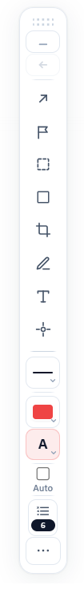
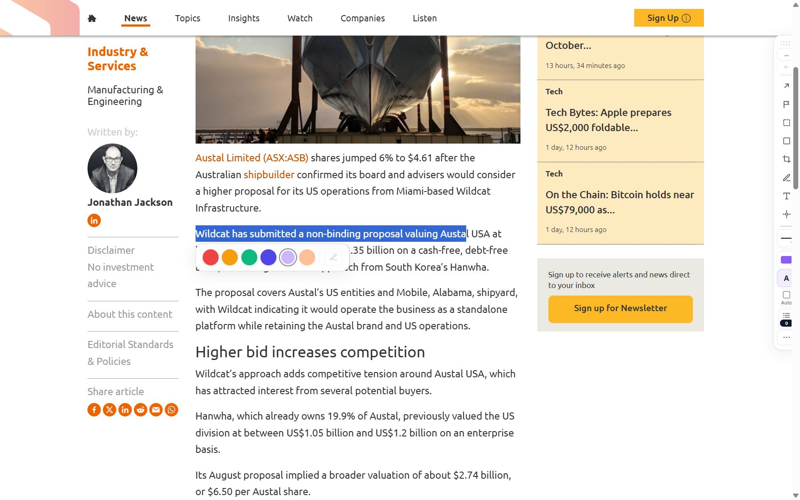
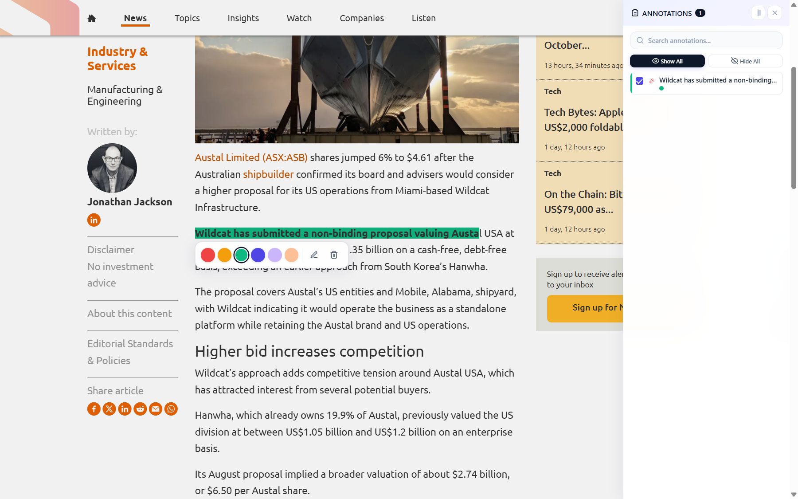

Annotation Tools
Everything in the floating control panel: highlights, drawing tools, screenshots, notes, and the drawer that keeps your page's annotations at hand.
The control panel at a glance
When Sagitnote is active on a page, the control panel floats above the content. Drag the handle on its left edge to move it anywhere; click — to minimize it to a small tab while you read.

| Part | What it does |
|---|---|
| ⠿ handle | Drag to move the panel anywhere on the page. Drag it past the right or bottom edge and the panel switches between horizontal and vertical layouts automatically. |
| — minimize | Collapse the panel to a small tab; click again to restore. |
| ↶ undo | Undo the annotation you just created (Ctrl+Z works too). |
| Tool buttons | Arrow, Flag, Rectangle Frame, Image Rectangle, Page Screenshot, Freehand Line, Text Note, Element Mark. |
| Width | Stroke thickness (1–5 px) for drawing tools; also sets the font size of text notes. |
| A color | The current color used by new annotations. |
| Style group | Text highlight styles: fill, border, underline, wavy, text color. |
| Auto | Highlight every text selection automatically. |
| Browse (count) | Open the drawer listing all annotations on this page. |
| 💬 popups toggle | Close every open annotation popup at once (see Annotation popups). |
| ⋯ More | Page note, favorites, import/export, manager, sharing, snapshots, settings, help. |
Text highlights
Select any text on the page and a color bar appears next to the selection. Click a color dot and the text is highlighted instantly using the style currently selected in the panel's style group. The bar stays open — its lit-up pen button lets you add a note and tags right away, and choose whether the note appears on hover or stays always visible. Click an existing highlight to open a quick popup: change its color, edit its note (pen), or delete it. To change the style, open Browse and edit the annotation in its Annotation Detail.
Highlight styles available from the style group on the panel:
- Fill — classic marker behind the text.
- Border — a rectangle outline around the selection.
- Underline — a straight line under the text.
- Wavy — a wavy line under the text (great for “revisit this”).
- Text color — recolors the characters themselves.
Long articles: turn on Auto once, then simply select text — each selection is highlighted with the current color and style without extra clicks. Turn Auto off when you are done.

Highlights survive page reloads: Sagitnote re-applies them when you come back to the page (as long as the page content is still there).
Drawing tools
Pick a tool on the panel, then interact with the page. Click the tool again (or pick another tool) to put it away — only one tool is active at a time. While a tool is active, the element under your cursor is outlined so you can see exactly what you are pointing at.
Every drawing is an annotation — it appears in the drawer, can be edited, and is restored on reload.
Arrow
Drag from where the arrow starts to where it should point. Use it to call out a specific spot in a chart, paragraph, or layout.
Flag
Click anywhere to plant a small flag marker. Click the flag to attach or read a note — useful as a visual bookmark on long pages.
Rectangle Frame
Drag to draw a rectangle outline around any region — a paragraph, a price, a photo — to say “look here”.
Image Rectangle
Works on images only: when this tool is active, hover over a picture (the cursor becomes a crosshair) and drag to draw a solid rectangle over it. Sagitnote remembers the image, and — with auto-save images enabled in Settings (on by default) — keeps a local copy of it so your mark survives even if the image later changes or goes offline.
Page Screenshot
Drag to select any region of the page — Sagitnote captures it as an image annotation. If the region extends beyond the visible screen, the page is scrolled and stitched automatically, so tall sections can be captured in one drag. The capture is stored with your annotations and shown as a thumbnail in the drawer and the Annotation Manager.
Freehand Line
Draw freely with the mouse or a stylus — circle a typo, underline a phrase, sketch a shape.
Text Note
Click a spot on the page and type. The note stays pinned where you put it, like a sticky note.
Element Mark
Move your cursor around the page and Sagitnote outlines whole elements — a button, an image, a card, a link. Click to mark the element itself. Element marks are more robust than drawings when a page's layout shifts.

Colors and styles
The panel's color button opens the palette — red, amber, green, blue, violet, orange — shared by highlights and drawings. All six colors are available to everyone. In Settings (Palette section) you can rename colors (up to 12 characters) and adjust their values to build your own color-coding system.
Line width (1–5 px) controls drawing strokes, arrowheads, and rectangle borders — it also sets the font size of text notes. It does not affect text highlights; those are shaped by the style group (fill, border, underline, wavy, text color) instead. Your last used color and style are remembered for new annotations.
Annotation popups
A note attached to any annotation can appear in two ways: as a hover tooltip, or as an always-visible card pinned to the page. Always-visible cards have a ✕ button in their top-right corner — click it to get the card out of the way. Closing only lasts for the current visit: reload the page and the card is back.
Whenever a note popup is not on screen, marks that carry a note show a small bubble icon in their place:
- Text highlights — the bubble sits inline, right after the highlighted text.
- Drawing marks (arrow, rectangle frame, screenshot, flag, freehand, element mark) — the bubble hangs next to the mark, usually at its top-right corner.
- Image annotation (whole-image note) — the pen icon next to the image doubles as the bubble.
Click the bubble to reopen the note. On a computer you can also hover the bubble for a quick preview card — note, author, and tags at a glance. (Touch screens skip the hover preview, so tapping always opens the full popup.)
To hide every open card at once, use the 💬 popups toggle on the panel — "Close all annotation popups". The toggle is remembered, so if you prefer a clean page, it stays that way on your next visit. Editing a note and saving reopens its card so you can see the result.
The annotations drawer
The Browse button (showing the number of annotations on this page) opens the drawer — your working list for the current page:
- Search — filter annotations by their note text.
- List — every annotation with a type icon; click one to jump to it on the page.
- Show all / Hide all — toggle the visibility of all annotations on the page.
- Edit — open an annotation's detail to change its color or style, add tags, write a note, or delete it.
In Settings you can choose how the drawer opens: Push compresses the page to make room, while Overlay floats the drawer above the page. The button in the drawer's header toggles between the two on the spot, and your choice is remembered.


The More (⋯) menu
The More menu collects page-level actions:
| Item | What it does |
|---|---|
| 📝 Page note | Attach a free-form note to the whole page — a summary or reminder for your next visit. |
| Add to favorites | Star the page so it is easy to find in the Annotation Manager. |
| Export | Export this page's annotations (and content) as a file. |
| Import | Import annotations from an exported file. |
| Annotation Manager | Open your full library — all pages, folders, and settings. |
| Share annotations | Share this document's annotations with others via a link (available on both Free and Pro). |
| Save snapshot | Save a snapshot copy of the page so its content is preserved even if the original changes. |
| Generate Modification Prompts | Collect all annotations on the page as structured prompts — handy when you plan to hand the feedback to a developer or an AI coding tool. |
| Settings | Open the extension settings. |
| Annotation | Temporarily show/hide all Sagitnote annotations (toggle). |
| Feedback & Suggestions | Tell us what works and what doesn't. |
| Help & docs | Open this documentation. |
| Upgrade Pro Pro | Upgrade your plan, check quotas, and see repeat-purchase previews. |
| Sign in | Shown only when you are signed out; opens the sign-in/registration page. To sign out, use the Settings page or the Annotation Manager. |

Undo and delete
Just made a mistake? The panel's ↶ Undo button (or Ctrl+Z) removes the annotations you just created, one after another, until the stack is empty. Note that undo only covers creation — deletions cannot be undone. You can delete any annotation from its quick popup, its hover toolbar, or the drawer.